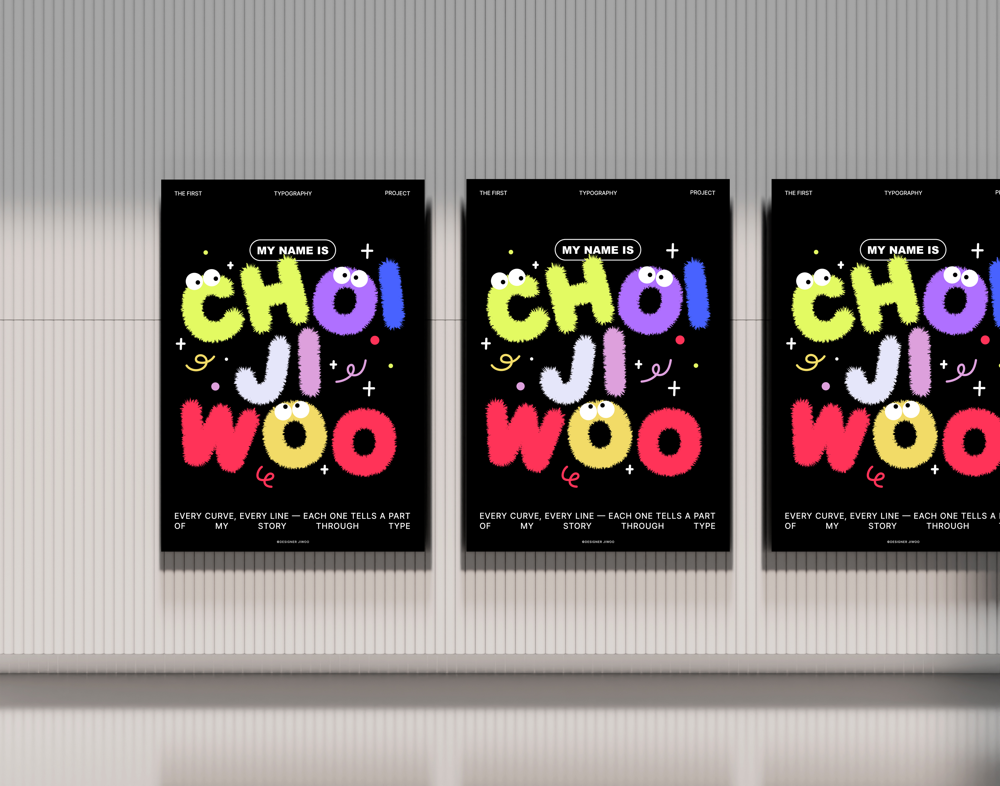

타이포그래피 과제 포스터
2025 / Editorial



타이포그래피 과제 포스터
본 작업은 학교 수업의 타이포그래피 과제로, ‘자신의 이름을 활용한 문자 자체 타이포그래피 제작’이라는 주제를 바탕으로 진행하였습니다. 저는 평소 친구들에게 ‘폼폼이’를 닮았다는 말을 자주 듣습니다. 말랑하고 순한 인상을 지닌 캐릭터인 폼폼이의 이미지와 저의 성격을 연결하여, 이름 속 글자 하나하나를 캐릭터화된 조형 언어로 풀어내고자 했습니다. 이 작업은 단순한 이름 표현을 넘어, 개인 정체성과 감성을 시각화한 실험적인 포스터입니다.
디자인. 최지우
Meat Meat Leaflet Design
©Designer Jiwoo